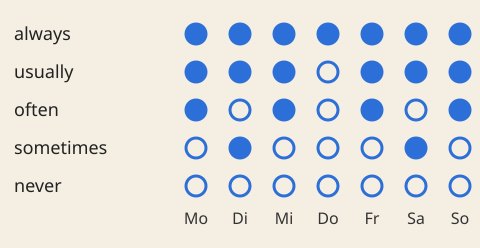

Wie oft? Von always bis never
Mit einem KI-Tutor lernen
Ein KI-Tutor erklärt dir diese Seite und hilft dir bei den Aufgaben. Wähl deinen Assistenten:
Mit Claude öffnen Mit ChatGPT öffnen Mit Mistral Vibe öffnen
Du nutzt dein eigenes Konto beim Anbieter. Der Assistent ist kein Angebot von lernapps.net: lernapps liefert nur Inhalte und Aufgaben. Die Wahl gilt für alle Seiten, nur auf diesem Gerät.
Wer kommt wann zur Schule?

Von links: Sophie (Zöpfe), Ellie (roter Pferdeschwanz), Amir (Brille) und Peter (gelbe Jacke). Ellie spricht.
Quelle: eigene Zeichnung. Lizenz: CC-BY-4.0.Der Schultag in Millbrook beginnt um Viertel vor neun. Ellie erzählt Sophie, wer wann kommt: „Amir is never late.“ Late heißt „zu spät“.
Aufgabe
Lösung
Nie. richtige Antwort
never heißt „nie“. Amir kommt kein einziges Mal zu spät.
Immer.
Immer heißt auf Englisch always. Das steht nicht im Satz.
Manchmal.
Manchmal heißt sometimes. Das steht nicht im Satz.
Das Wort never sagt, wie oft etwas passiert. Hier passiert es nie.
Das kannst du danach: Du sagst auf Englisch, wie oft jemand etwas tut, und setzt das Wort an die richtige Stelle im Satz.
Das Wochenraster
Wie oft etwas passiert, sagen die Häufigkeitswörter. Mr Hill zeichnet dafür ein Raster: Jede Reihe ist ein Häufigkeitswort, jeder Punkt ein Tag der Woche. Je mehr Punkte ausgefüllt sind, desto öfter passiert es. Am Zeitstrahl hängen die Wörter dann als Fähnchen über der Punktreihe vom simple present.

Jede Reihe ist eine Woche. Ein ausgefüllter Punkt heißt, dass die Person es an diesem Tag tut.
Quelle: eigene Zeichnung. Lizenz: CC-BY-4.0.| Ausdruck | Bedeutung |
|---|---|
| always | immer |
| usually | meistens |
| often | oft |
| sometimes | manchmal |
| never | nie |
Merke
Das Häufigkeitswort steht vor dem Verb: Sophie usually takes the bus. Bei am, is und are steht es danach: Amir is usually tired. Das -s bei he, she und it bleibt: Sophie usually takes.
Übung
Aufgabe
Wähle das passende Häufigkeitswort.
- Sophie isst immer Frühstück. → Sophie … eats breakfast.
- Amir spielt oft Tennis. → Amir … plays tennis.
- Ellie nimmt nie den Bus. → Ellie … takes the bus.
- Peter ist manchmal zu spät. → Peter is … late.
Lösung
- Sophie always eats breakfast.
- Amir often plays tennis.
- Ellie never takes the bus.
- Peter is sometimes late.
Aufgabe
Lösung
Peter often plays football. richtige Antwort
Das Häufigkeitswort steht vor dem Verb plays.
Peter plays often football.
Das Wort often steht nicht zwischen Verb und football. Es gehört vor das Verb.
Peter often play football.
Das Wort steht richtig, aber bei he, she und it fehlt das s am Verb.
Das Häufigkeitswort kommt vor das Verb, und bei he, she und it bleibt das s.
Aufgabe
Lösung
Ellie is always happy. richtige Antwort
Bei is steht das Häufigkeitswort danach.
Ellie always is happy.
Bei is, am und are steht das Wort nach dem Verb, nicht davor.
Ellie is happy always.
Das Wort steht nicht am Ende, sondern direkt nach is.
Bei am, is und are steht das Häufigkeitswort danach.
Aufgabe
Lösung
Richtige Antwort: 1. Ellie always walks to school., 2. Amir usually walks to school., 3. Peter often walks to school., 4. Sophie sometimes walks to school., 5. Mr Hill never walks to school.
Die Reihenfolge ist always, usually, often, sometimes, never. Das Wort steht jedes Mal vor walks.
Aufgabe
Schreibe den ganzen Satz. Setze das Häufigkeitswort an die richtige Stelle.
Tipp
Frag dich, ob im Satz is vorkommt. Dann steht das Wort danach, sonst davor.
- Mr Hill · drink tea · always
- Sophie · is · tired · sometimes
- Ellie · take the bus · sometimes
- Amir · eat lunch · usually · at school
Lösung
- Mr Hill always drinks tea.
- Sophie is sometimes tired.
- Ellie sometimes takes the bus.
- Amir usually eats lunch at school.
Aufgabe
Schreibe den Satz auf Englisch.
- Wir spielen oft Fußball.
- Peter ist nie müde.
- Amir isst nie Frühstück.
Lösung
- We often play football.
- Peter is never tired.
- Amir never eats breakfast.
Aufgabe
Hör zu und schreibe, was du hörst.
- KI
- KI
- KI
Lösung
- Mr Hill is never angry in class.
- Sophie sometimes writes to her friends.
- Ellie often visits her grandmother.
Selbst sagen und schreiben
Aufgabe
Hör zu, sprich nach und nimm dich auf. Vergleiche dann mit dem Original.
Tipp
Hör den Satz zuerst. Sprich dann langsam nach und achte darauf, wo das Häufigkeitswort steht.
- We usually have breakfast at eight.KI
- We usually walk to school.KI
- Peter always drinks milk in the morning.KI
Zum Aufnehmen braucht diese Aufgabe JavaScript. Die Beispiele kannst du auch ohne anhören.
Lösung
- We usually have breakfast at eight.
- We usually walk to school.
- Peter always drinks milk in the morning.
Offene Aufgabe
Sophie hängt zwei Karten über die Punktreihe am Zeitstrahl. Schreibe zwei Sätze über dich: Was tust du immer, oft, manchmal oder nie? Benutze in jedem Satz ein Häufigkeitswort.
Eine gute Antwort enthält:
Lösung
I always eat breakfast. I am never late.
Wie es weitergeht
Über der Punktreihe am Zeitstrahl hängen jetzt Fähnchen. Amir kommt nie zu spät, Peter manchmal. Da zeigt Mr Hill zum Fenster: Was tun die Kinder gerade? Auf der nächsten Seite lernst du, wie du sagst, was gerade passiert.